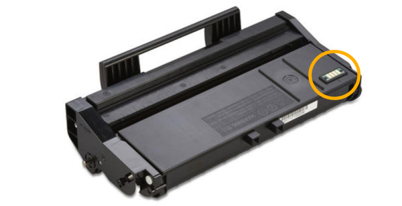
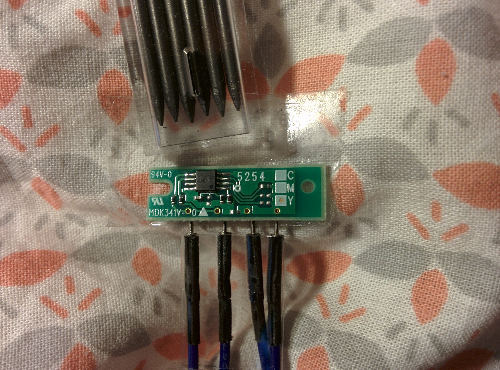
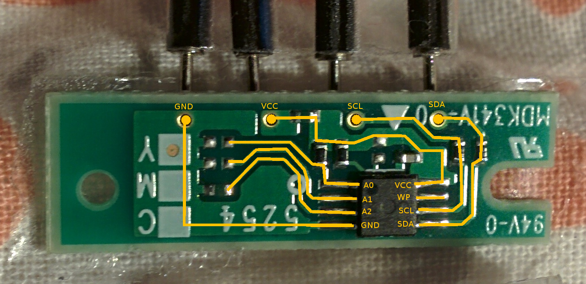
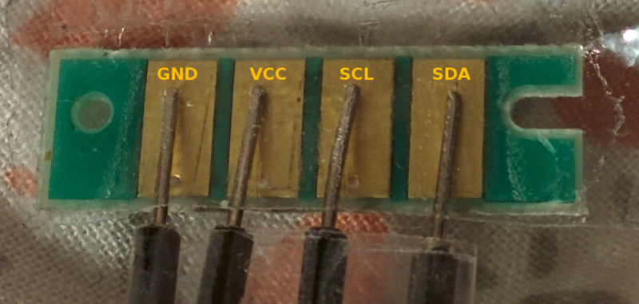
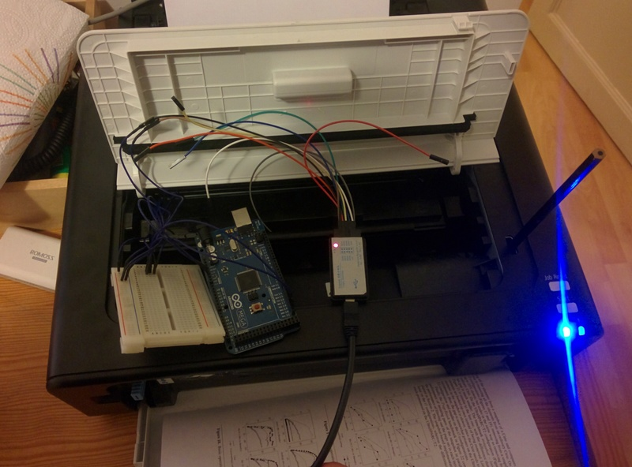
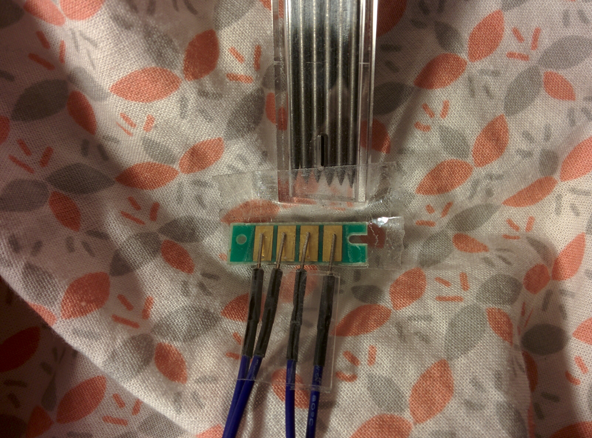
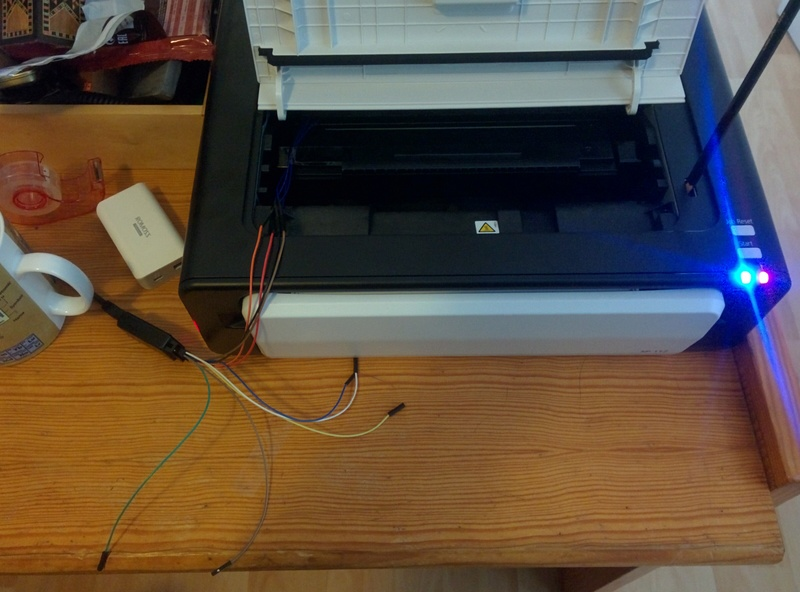
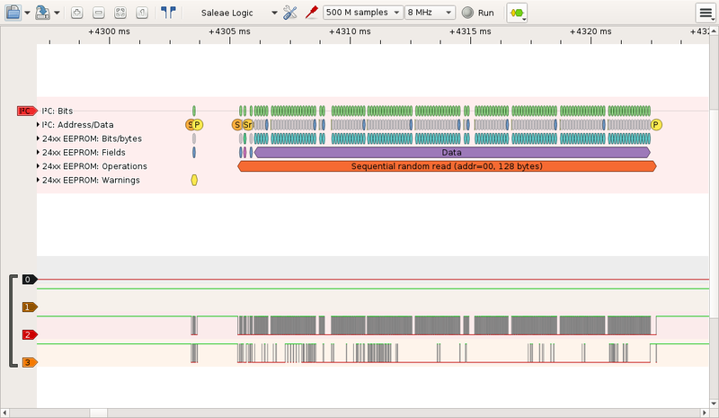

Here are some advices to reset your toner chip with an Arduino.
Introduction
Some printer toner comes with a small circuit like:

In order to reuse this kind of toner, there are two steps:
- refill the toner with ink (if needed)
- reset the toner chip (or replace it)
There is plenty of information explaining how to refill the toner but little information on how to erase the toner chip.
This document deals with the second part: how to analyse the chip and reset it.
It took me a while to get everything setup and to have my toner chip reset so i would like to share this process in order to help other to do the same on their printer.
We will go step-by-step to understand the problem, analyse the circuit, read the chip memory and write it back so the toner can function again.
For more information about why manufaturer include those chips, read the about page.

Step 0: the problem
Your computer talks to your printer via a USB link (or maybe through wifi). The printer itself communicate with the toner chip via an I2C or a SPI bus.
+------------+ +-----------+ +-------------+
| Host | USB | | I2C | toner |
| computer | <-------> | Printer | <--------> | chip |
| | | | | |
+------------+ +-----------+ +-------------+
So what we will do is to connect our Arduino directly to the toner chip like this:
+-----------+ +-----------+
| | I2C | toner |
| Arduino | <------> | chip |
| | | |
+-----------+ +-----------+
IC2 buses are very common on embedded systems. For example, smartphones use them to connect the touchscreen or the motion sensor to the main processor chip. There is plenty of documentation, i like this one from saleae.
The full specification is avavailable at: http://www.i2c-bus.org/
For your particalar printer, it might be an SPI bus instead of an I2C bus. But this does not really matter: the analysis procedure is the same.
Step 1: the circuit
The first step is to analyse the circuit. Here you should gather as much information as you can:
- Read the part number and search it on the Internet.
- Search if other people have shared information about your printer.
In my case, the chip looked like an EEPROM memory. This is was confirmed by two blogs discussing other model Ricoh printers:
- http://www.mikrocontroller.net/topic/369267
- https://esdblog.org/ricoh-sp-c250dn-laser-printer-toner-hack/
I still could not find the exact EERPOM model, but it is of the 24xxx family.
 
Your particular circuit will be different from this one.
If you have absolutly no idea, jump to the section: "Bonus 1: snif the I2C commands" at the end of this page.
The rest of the tutorial is about how to read and write this EEPROM memory.
Step 2: connect your Arduino
Depending on the board the I2C pins are:
| Board | I2C pins |
|---|---|
| Uno, Ethernet | A4 (SDA), A5 (SCL) |
| Mega2560 | 20 (SDA), 21 (SCL) |
| Due | 20 (SDA), 21 (SCL) |
| Leonardo | 2 (SDA), 3 (SCL) |
Then connect GND and VCC to 3.3V.
Step 3: find the I2C clock and address
To communicate on an I2C bus, we need to know the clock speed and the address of the EEPROM.
If you know the EEPROM model from the circuit analysis, you can read the datasheet and find the clock rate and address like this:
For example the datasheet of the component FM24C02B
indicates an operating clock of 1MHz at 3.3V.
The datasheet indicates how to calculate the address according to the
PIN A0, A1 and A2. In binary, the address is computed like this: 1 0
1 0 A2 A1 A0.
So if the configuration is:
A0 = 1
A1 = 1
A2 = 0
The address is 1 0 1 0 0 1 1 (83).
Note: 1MHz seems to be the upper bound of the my Arduino Mega can reach. So I just use 800 kHz, see the full discussion.
If you don't know the clock rate and the device address on the I2C bus, you can scan all the possible I2C addresses at different clock rate. The directory scanner have a sketch to do this. Here is the output of the program execution on my Arduino:
Arduino I2C Scanner - 0.1.06
Scanmode:
s = single scan
c = continuous scan - 1 second delay
q = quit continuous scan
d = toggle latency delay between successful tests. 0 - 5 ms
Output:
p = toggle printAll - printFound.
h = toggle header - noHeader.
a = toggle address range, 0..127 - 8..120
Speeds:
0 = 50 - 800 Khz
1 = 100 KHz only
2 = 200 KHz only
4 = 400 KHz only
8 = 800 KHz only
? = help - this page
TIME DEC HEX 50 100 200 250 400 500 800 [KHz]
---------------------------------------------------------------------------------------------
2987 0 0x00 . . . . . . .
2990 1 0x01 . . . . . . .
2992 2 0x02 . . . . . . .
2994 3 0x03 . . . . . . .
2997 4 0x04 . . . . . . .
2999 5 0x05 . . . . . . .
3002 6 0x06 . . . . . . .
3004 7 0x07 . . . . . . .
3007 8 0x08 . . . . . . .
3009 9 0x09 . . . . . . .
3012 10 0x0A . . . . . . .
[...]
3196 80 0x50 . . . . . . .
3200 81 0x51 . . . . . . .
3202 82 0x52 . . . . . . .
3205 83 0x53 V V V V V V V
3207 84 0x54 . . . . . . .
3210 85 0x55 . . . . . . .
3212 86 0x56 . . . . . . .
3215 87 0x57 . . . . . . .
3218 88 0x58 . . . . . . .
3220 89 0x59 . . . . . . .
3223 90 0x5A . . . . . . .
[...]
3304 120 0x78 . . . . . . .
3306 121 0x79 . . . . . . .
3309 122 0x7A . . . . . . .
3312 123 0x7B . . . . . . .
3314 124 0x7C . . . . . . .
3317 125 0x7D . . . . . . .
3320 126 0x7E . . . . . . .
3322 127 0x7F . . . . . . .
1 device find in 347 milliseconds.
From here, we know the device address on the I2C bus is 83 (0x53) and the operating clock is anything between 50 kHz and 800 kHz.
Step 4: reading the EEPROM
Since we know how to communicate with the chip, let's read the content of the memory. For 24xxx EEPROM, the datasheet for FM24C02B explains how to complete a read operation:
master send start condition
master send eeprom address + read bit
master send data address
master send start condition
master send eeprom address + read bit
device respond with data
master send stop condition
STOP condition mandatory between writes.
Write cycle: 5 ms.
The function "printRandomAddress" of the Reset.ino sketch implements this random read operation. Once the read operation works, you can print each bytes of the EEPROM one by one and save them in a file.
$ head dump.txt
0x20
0x0
0x1
0x3
0x1
0x1
0x3
0x0
0x0
0x0Next I converted the text file into a binary format. I found binary format easier to analyze with xxd:
$ head -n 256 dump.txt | xargs printf "%02x\n" | xxd -c 1 -p -r > dump.bin
$ xxd dump.bin
00000000: 2000 0103 0101 0300 0000 ffff ffff ffff ...............
00000010: 1504 4d47 2700 1882 0000 0000 2000 0101 ..MG'....... ...
00000020: 5830 3235 4d34 3331 3536 3620 0045 0000 X025M431566 .E..
00000030: 0000 0000 0000 0000 0000 0106 0000 0000 ................
00000040: 0000 0107 0000 0000 0000 0000 0000 0000 ................
00000050: 0000 0000 0000 0106 2000 0101 2000 0101 ........ ... ...
00000060: 0000 0000 0000 0000 0106 0000 0000 0000 ................
00000070: 000e 715d 1000 1427 0000 0000 0000 0000 ..q]...'........
00000080: ffff ffff ffff ffff ffff ffff ffff ffff ................
00000090: ffff ffff ffff ffff ffff ffff ffff ffff ................
000000a0: ffff ffff ffff ffff ffff ffff ffff ffff ................
000000b0: ffff ffff ffff ffff ffff ffff ffff ffff ................
000000c0: ffff ffff ffff ffff ffff ffff ffff ffff ................
000000d0: ffff ffff ffff ffff ffff ffff ffff ffff ................
000000e0: ffff ffff ffff ffff ffff ffff ffff ffff ................
000000f0: ffff ffff ffff ffff ffff ffff ffff ffff ................
Here we can see:
- there seems to be a header (0x0 to 0x0f),
- followed by some numbers (0x10 to 0x1f),
- followed by a string (X025M431566)
- followed by some sparse values
This does not make much sense. The next step is to figure out what those values are for.
Step 5: understand the data
In order to understand the memory layout, we have to think like a detective.
The EEPROM is a simple data storage. The printer might wants to:
- read the toner model (to check compatibility)
- store the number of printed pages and/or the number of printed dot
- mark is as used by a particular printer to prevent second hand market
- mark the date of the first and last usage to make it out of date.
- store toner capacity of page and 'dot' (can be a cound down value).
This is purely speculative at this stage.
In the search for evidences, we can capture the USB packet sent by the computer to the printer. Thanks to tcpdump, this is very easy (see "Bonus 2: snif the USB packets").
My particular printer uses Printer Job Language: PJL. Here is a data transfered over USB when I print a page:
%-12345X@PJL
@PJL SET TIMESTAMP=2015/09/14 21:15:14
@PJL SET FILENAME=test - Notepad
@PJL SET COMPRESS=JBIG
@PJL SET USERNAME=IEUser
@PJL SET COVER=OFF
@PJL SET HOLD=OFF
@PJL SET PAGESTATUS=START
@PJL SET COPIES=1
@PJL SET MEDIASOURCE=TRAY1
@PJL SET MEDIATYPE=PLAINRECYCLE
@PJL SET PAPER=LETTER
@PJL SET PAPERWIDTH=5100
@PJL SET PAPERLENGTH=6600
@PJL SET RESOLUTION=600
@PJL SET IMAGELEN=691
[... image data ... ]
@PJL SET DOTCOUNT=10745
@PJL SET PAGESTATUS=END
@PJL EOJ
%-12345X
The important piece of information are:
- the DOTCOUNT value
- the TIMESTAMP value
One note about dates: To implement a simple 'out of date' mechanism, year/mount/day is enough. But if the toner needs to warm-up or cool down hours/minutes/seconds might also required. 2016 converted to hexadecimal is 7E0. Be aware of Unix epoch format. It is well suited for this need. Here is an example of a date in hexadecimal values:
$ date --date='@1456056478'
Sun Feb 21 13:07:58 CET 2016
$ echo "obase=16; 1456056478" | bc
56C9A89E
32 bits is enough to live until 2038, which certainly exceeded the expected life of such product.
To recap, we can expect the following informations in the EEPROM memory:
- a standard header to verify if the EEPROM is correctly workding
- a part number for model compatibility
- a status/error value (to signal when the toner has caused a problem)
- a 'dot' count number (and/or the number of printed pages)
- a maximum 'dot' capacity (and/or the maximum number of pages to print)
- a last used date field (and/or a first used data field)
Unfortunatly, I was not able to figure out the memory layout but I wish you better luck!
Step 6: try some changes
If you are lucky enough that your toner chip is still working (printing), you can dump the content of the EEPROM before and after printing a page. This might give you clues about the memory layout.
The process is like this:
- read the EEPROM content
- make some changes base on an hypothesis
- write the content into the EEPROM
- try to print a page and restart if this does not work.
In order to speed-up the process, i directly connect my Arduino to the chip inside the printer so i do not need to manipulate the printer during the experiments.

As for me, i try a couple of random changes without success. Then i had the idea to erase all the memory except the addresses 0x0 to 0x0f and it worked!
Another advantage of the binary data: with xxd you can convert the binary data into a C header file. This C header file can be included in your program.
$ xxd -i dump.bin | tee dump_bin.h
unsigned char dump_bin[] = {
0x20, 0x00, 0x01, 0x03, 0x01, 0x01, 0x03, 0x00, 0x00, 0x00, 0xff, 0xff,
0xff, 0xff, 0xff, 0xff, 0x15, 0x04, 0x4d, 0x47, 0x27, 0x00, 0x18, 0x82,
0x00, 0x00, 0x00, 0x00, 0x20, 0x00, 0x01, 0x01, 0x58, 0x30, 0x32, 0x35,
0x4d, 0x34, 0x33, 0x31, 0x35, 0x36, 0x36, 0x20, 0x00, 0x45, 0x00, 0x00,
0x00, 0x00, 0x00, 0x00, 0x00, 0x00, 0x00, 0x00, 0x00, 0x00, 0x01, 0x06,
0x00, 0x00, 0x00, 0x00, 0x00, 0x00, 0x01, 0x07, 0x00, 0x00, 0x00, 0x00,
0x00, 0x00, 0x00, 0x00, 0x00, 0x00, 0x00, 0x00, 0x00, 0x00, 0x00, 0x00,
0x00, 0x00, 0x01, 0x06, 0x20, 0x00, 0x01, 0x01, 0x20, 0x00, 0x01, 0x01,
0x00, 0x00, 0x00, 0x00, 0x00, 0x00, 0x00, 0x00, 0x01, 0x06, 0x00, 0x00,
0x00, 0x00, 0x00, 0x00, 0x00, 0x0e, 0x71, 0x5d, 0x10, 0x00, 0x14, 0x27,
0x00, 0x00, 0x00, 0x00, 0x00, 0x00, 0x00, 0x00, 0xff, 0xff, 0xff, 0xff,
0xff, 0xff, 0xff, 0xff, 0xff, 0xff, 0xff, 0xff, 0xff, 0xff, 0xff, 0xff,
0xff, 0xff, 0xff, 0xff, 0xff, 0xff, 0xff, 0xff, 0xff, 0xff, 0xff, 0xff,
0xff, 0xff, 0xff, 0xff, 0xff, 0xff, 0xff, 0xff, 0xff, 0xff, 0xff, 0xff,
0xff, 0xff, 0xff, 0xff, 0xff, 0xff, 0xff, 0xff, 0xff, 0xff, 0xff, 0xff,
0xff, 0xff, 0xff, 0xff, 0xff, 0xff, 0xff, 0xff, 0xff, 0xff, 0xff, 0xff,
0xff, 0xff, 0xff, 0xff, 0xff, 0xff, 0xff, 0xff, 0xff, 0xff, 0xff, 0xff,
0xff, 0xff, 0xff, 0xff, 0xff, 0xff, 0xff, 0xff, 0xff, 0xff, 0xff, 0xff,
0xff, 0xff, 0xff, 0xff, 0xff, 0xff, 0xff, 0xff, 0xff, 0xff, 0xff, 0xff,
0xff, 0xff, 0xff, 0xff, 0xff, 0xff, 0xff, 0xff, 0xff, 0xff, 0xff, 0xff,
0xff, 0xff, 0xff, 0xff, 0xff, 0xff, 0xff, 0xff, 0xff, 0xff, 0xff, 0xff,
0xff, 0xff, 0xff, 0xff
};
unsigned int dump_bin_len = 256;
Step 7: share your findings
Congrats! You have done some work, collected some information and get a better understanding of your toner chip. Let the world know about your findings and learn from others!
Bonus 1: snif the I2C commands
One way to gain some insight about the memory layout, is to spy the communication between the printer and the toner during the printing processus.
In order to do so, we can use a logical analyser. This is a simple equipement that will record the logical state of the wires.
+------------+ +-----------+ +-------------+
| Host | USB | | I2C | toner |
| computer | <-------> | Printer | <--------> | chip |
| | | | ^ | |
+------------+ +-----------+ | +-------------+
|
logical
analyser
This can be very useful to learn:
- the general properties of the communication (type of bus, clock speed, device address).
- what memory address the printer read and write
The main open source project to use logical analysers is Sigrok. For the list of supported analysers please refer to supported hardware page.
The following pictures explain the settings:
- attach the wires to the circuit and put back the circuit on the toner in the printer.
- connect the logical analyzer.


To capture the data transfert, you can use a graphical tool like Pulseview.

You can also use the command line tool called sigrok-cli as demonstrated bellow:
$ sigrok-cli -i start_printer_failed.sr -P i2c:scl=2:sda=3,eeprom24xx
Control code bits: 1010
Address bit 2: 0
Address bit 1: 1
Address bit 0: 1
R/W bit: write
Control word
Warning: Slave replied, but master aborted!
Control code bits: 1010
Address bit 2: 0
Address bit 1: 1
Address bit 0: 1
R/W bit: write
Control word
Control code bits: 1010
Address bit 2: 0
Address bit 1: 1
Address bit 0: 1
R/W bit: read
Control word
Word address byte: 00
Sequential random read (addr=00, 128 bytes): 20 00 01 03 01 01
03 00 00 00 FF FF FF FF FF FF 15 04 4D 47 27 00 18 82 00 00 00 00 20
00 01 01 58 30 32 35 4D 34 33 31 35 36 36 20 00 45 00 00 00 00 00 00
00 00 00 00 00 00 01 06 00 00 00 00 00 00 01 07 00 00 00 00 00 00 00
00 00 00 00 00 00 00 00 00 00 00 01 06 20 00 01 01 20 00 01 01 00 00
00 00 00 00 00 00 01 06 00 00 00 00 00 00 00 0E 73 51 10 00 14 27 00
00 00 00 00 00 00 00
Control code bits: 1010
Address bit 2: 0
Address bit 1: 1
Address bit 0: 1
R/W bit: write
Control word
Word address byte: 76
Word address
Data byte 76: 14
Data
Byte write (addr=76, 1 byte): 14
Control code bits: 1010
Address bit 2: 0
Address bit 1: 1
Address bit 0: 1
R/W bit: write
Control word
Word address byte: 70
Word address
Data byte 70: 00
Data byte 71: 0E
Data byte 72: 75
Data byte 73: 45
Data
Page write (addr=70, 4 bytes): 00 0E 75 45
Control code bits: 1010
Address bit 2: 0
Address bit 1: 1
Address bit 0: 1
R/W bit: write
Control word
Word address byte: 70
Word address
Data byte 70: 00
Data byte 71: 0E
Data byte 72: 77
Data byte 73: 39
Data
Page write (addr=70, 4 bytes): 00 0E 77 39
Control code bits: 1010
Address bit 2: 0
Address bit 1: 1
Address bit 0: 1
R/W bit: write
Control word
Word address byte: 77
Word address
Data byte 77: 5A
Data
Byte write (addr=77, 1 byte): 5A
Control code bits: 1010
Address bit 2: 0
Address bit 1: 1
Address bit 0: 1
R/W bit: write
Control word
Word address byte: 70
Word address
Data byte 70: 00
Data byte 71: 0E
Data byte 72: 77
Data byte 73: 8D
Data
Page write (addr=70, 4 bytes): 00 0E 77 8DHow to read this: one sequential read of the content of the eeprom, followed by a sequence of write operations: 4 byte at 0x70, 1 byte at 0x76. This the printer read all the eeprom, it is difficult to figure out which address hold which information.
Bonus 2: snif the USB packets
Here is an example of USB command sent by the proprietary windows driver to the printer (captured with tcpdump when running windows inside qemu):
%-12345X@PJL
@PJL SET TIMESTAMP=2015/09/14 21:15:14
@PJL SET FILENAME=test - Notepad
@PJL SET COMPRESS=JBIG
@PJL SET USERNAME=IEUser
@PJL SET COVER=OFF
@PJL SET HOLD=OFF
@PJL SET PAGESTATUS=START
@PJL SET COPIES=1
@PJL SET MEDIASOURCE=TRAY1
@PJL SET MEDIATYPE=PLAINRECYCLE
@PJL SET PAPER=LETTER
@PJL SET PAPERWIDTH=5100
@PJL SET PAPERLENGTH=6600
@PJL SET RESOLUTION=600
@PJL SET IMAGELEN=691
[... image data ... ]
@PJL SET DOTCOUNT=10745
@PJL SET PAGESTATUS=END
@PJL EOJ
%-12345X
Usage
$ make
$ make upload
$ picocom -b 115200 /dev/ttyACM0Links
Blog: http://www.hobbytronics.co.uk/arduino-external-eeprom http://www.hobbytronics.co.uk/eeprom-page-write http://lusorobotica.com/index.php/topic,461.msg2738.html
Arduino: https://www.arduino.cc/en/Reference/Wire
Tonner investigations: http://www.mikrocontroller.net/topic/369267 https://esdblog.org/ricoh-sp-c250dn-laser-printer-toner-hack/ http://rumburg.org/printerhack/
Toner chip reset for sale: http://www.aliexpress.com/item/chip-FOR-RICOH-imagio-SP-112-SF-chip-MAILING-MACHINE-printer-POSTAGE-printer-for-Ricoh-100/32261857176.html http://www.ebay.com/itm/Toner-cartridge-refill-kit-for-Ricoh-Aficio-SP112-SP112SU-SP112SF-407166-non-OEM-/161312940764
Ricoh: https://www.techdata.com/business/Ricoh/files/july2014/CurrentMSRP.pdf http://support.ricoh.com/bb_v1oi/pub_e/oi/0001044/0001044844/VM1018655/M1018655.pdf
Datasheets: http://www.gaw.ru/pdf/Rohm/memory/br24l01.pdf http://www.rinkem.com/web/userfiles/productfile/upload/201009/FM24C02B-04B-08B-16B.pdf
Logical Analyser & I2C: http://support.saleae.com/hc/en-us/articles/202740085-Using-Protocol-Analyzers http://support.saleae.com/hc/en-us/articles/200730905-Learn-I2C-Inter-Integrated-Circuit
Ricoh SP112 LED
Left LED: Power Indicator
This indicator lights up blue when the machine is turned on.
It flashes when a print job is received and while printing is in progress.
Right LED: Alert Indicator
This indicator lights up red when the machine runs out of paper or consumables,
when the paper settings do match the settings specified by the driver,
or when other abnormalities occur.
Todo
- [x] Create arduino hello world
- [x] Read internal EEPROM
- [x] Draw the cricuit
- [x] Understand the cricuit
- [x] Try I2C clock at 400kHz and 1MHz
- [x] Scan for device => use MultiSpeedScanner
- [x] Analyse I2C trame with a logical analyser
- [x] Visualize I2C packets with pulseview
- [x] Read one EEPROM datasheet
- [x] Debug I2C addresses sent (1010001 and not 0101000) ~ frequence to high
- [x] Verifies the timming between read and write operations (5ms)
- [x] Find the exact EEPROM chip model
- [x] Find the EEPROM address (0x53)
- [x] Read the EPPROM chip
- [x] Order sp112 reset chip from internet
- [x] Analyse the EEPROM dump
- [x] Make a data hypothesis
- [x] Verify the write function
- [x] Dump a new reset chip
- [x] Write the EEPROM with a dump of a new reset chip
- [x] Test with the printer
- [ ] Learn about README.md format (image insertion & style)
- [ ] Write an article about this

This work is licensed under a Creative Commons Attribution 4.0 International License.